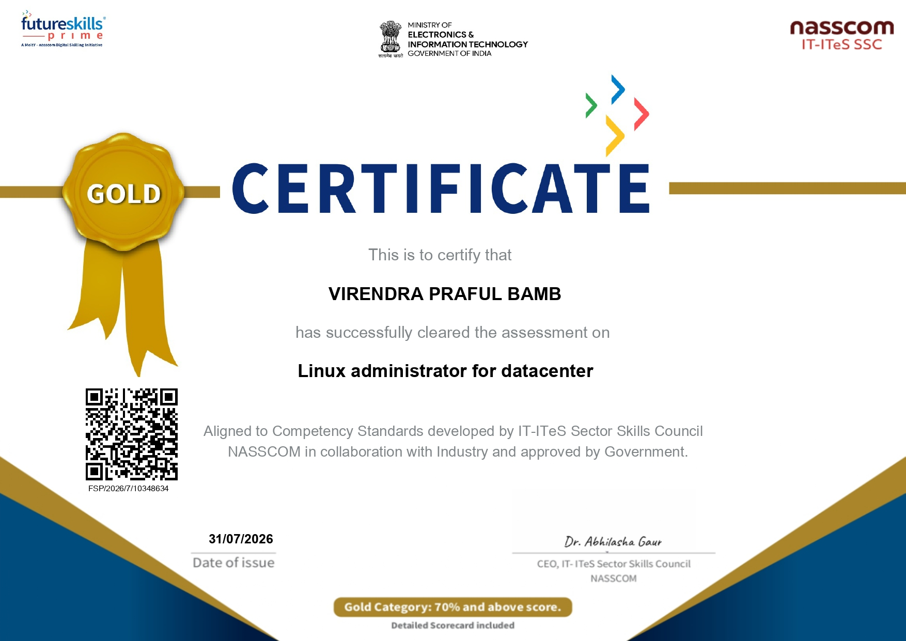

Linux / RHEL
Command line workflows, users and permissions, services, storage, and troubleshooting fundamentals.
RHCSA certified / frontend builder
Computer science student building a foundation in Red Hat Linux administration, reliable systems, and clean web interfaces.
01 / profile
My work sits between infrastructure and interface: understanding how systems operate, then presenting useful experiences on the web.
I am pursuing a B.Tech in Computer Science and Business System at JSPM RSCOE. I am particularly interested in Linux administration, server fundamentals, networking, and practical frontend development.
My goal is to grow into a dependable systems professional who can troubleshoot carefully, automate thoughtfully, and communicate clearly.
02 / toolkit
Core capabilities I am building through certification study, coursework, and hands-on projects.
Command line workflows, users and permissions, services, storage, and troubleshooting fundamentals.
Process awareness, system configuration, access control, and operational documentation.
Networking concepts, connectivity checks, addressing fundamentals, and service communication.
Semantic structure, responsive layouts, accessible navigation, and interface styling.
Version control habits, project organization, and sharing work through public repositories.
Programming fundamentals, problem solving, and an ongoing interest in competitive coding.
Container fundamentals, image workflows, and running isolated application services on Linux.
03 / certification
The Red Hat Certified System Administrator credential is the centre of my infrastructure path.
_page-0001.jpg)

My infrastructure learning is supported by both the Red Hat Certified System Administrator credential and a Datacenter certificate.
04 / selected work
Frontend projects that practice structure, layout, interaction design, and user-focused presentation.
A clean blog interface with a recent-posts layout and readable article presentation.
View project page ↗A focused task-management interface designed around quick entry, status, and clarity.
View project page ↗A compact utility interface exploring URL input, validation states, and result presentation.
View project page ↗05 / education
Academic work supports the systems and software foundation behind my projects.
JSPM Rajarshi Shahu College of Engineering
Semester 1 SGPA: 8.0 · Semester 2 SGPA: 8.0
06 / contact